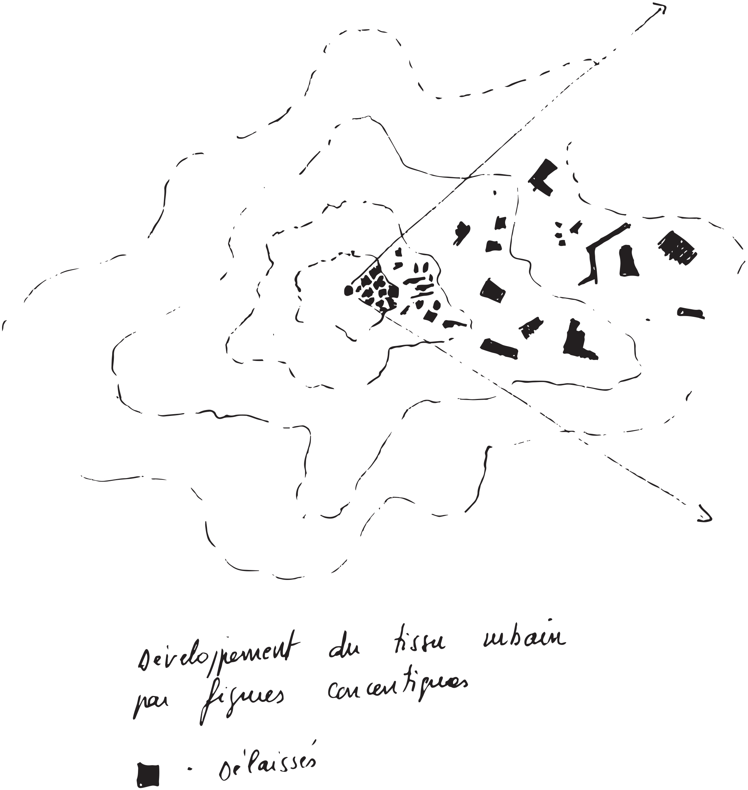

« Fragment indécidé du jardin planétaire, le Tiers paysage est constitué de l'ensemble des lieux délaissés par l'homme. Ces marges assemblent une diversité biologique qui n'est pas à ce jour repertoriée comme richesse.
Tiers paysage renvoie à tiers-état (et non à Tiers-monde). Espace n'exprimant ni le pouvoir ni la soumission au pouvoir.
Il se réfère au pamphlet de Sieyès en 1789 :
Qu'est-ce que le tiers état ? - Tout.
Qu'a-t-il fait jusqu'à présent ? - Rien.
Qu'aspire-t-il à devenir ? - Quelque chose. »
Refuges pour la diversité, constitués par la somme des délaissés, des réserves et des ensembles primaires.
Le délaissé procède de l'abandon d'un terrain anciennement exploité. Son origine est multiple : agricole, industrielle, urbaine, touristique, etc. Délaissé et friche sont synonymes.
La réserve est un lieu non exploité En peinture, la réserve est la portion du tableau non peinte.. Son existence tient au hasard ou bien à la difficulté d'accès qui rend l'exploitation impossible ou coûteuse. Elle apparaît par soustraction du territoire anthropisé.
Les réserves existent de fait (ensembles primaires) mais aussi par décision administrative.
Le caractère indécidé du Tiers paysage correspond à l'évolution laissée à l'ensemble des êtres biologiques qui composent le territoire en l'absence de toute décision humaine La décision administrative de mise en réserve circonscrit le territoire de réserve sans altérer la mécanique propre à son évolution, elle entérine l'indécision humaine sur ce lieu..
Le Jardin planétaire représente la planète comme un jardin. Le sentiment de finitude écologique fait apparaître les limites de la biosphère comme l'enclos Le mot « jardin » vient du germanique Garten, enclos. du vivant.
Diversité se réfère au nombre d'espèces vivantes distinctes parmi les animaux, les végétaux et les êtres simples (bactéries, virus, etc.), le nombre humain étant compris dans une seule et unique espèce dont la diversité s'exprime par les variétés ethniques et culturelles.
Le terme de Tiers paysage naît d'un regard porté sur le Limousin
L'analyse du paysage de Vassivière, établie dans le courant de l'année 2002 pour le Centre d'art et du paysage, laisse apparaître le caractère artificiel de ce qui semble « naturellement » présent : l'étendue d'eau d'un barrage hydroélectrique, les arbres d'une forêt gérée, l'herbe des élevages bovins... Ensemble organisé selon les facilités du relief, les expositions, les accès.
Ce que perçoit l'oiseau – que notre regard embrasse depuis un sommet – est un tapis tissé de formes sombres et bourrues : les forêts ; et de surfaces claires bien délimitées : les pâtures.
L'alternance d'arbres et d'herbes creuse le paysage, l'anime de perspectives courbes relancées par un relief doux et profond. La balance des ombres et des lumières répond à un dispositif dont on devine l'économie. L'immensité du territoire atteint par cet équilibre peut tromper le voyageur : s'agit-il d'un projet ? D'un hasard de l'histoire ? Morcellement des parcelles, habitat dispersé, variation du relief : tout cela constitue un appareil ancré dans la géographie et dans la société capable d'affronter durablement la machine à tout remembrer. Vestiges d'une polyculture dont un grand nombre de figures ont disparu pour laisser dominer deux richesses : l'arbre, l'herbe. Purs produits de la PAC – attitude dont le pouvoir réducteur n'est pourtant pas venu à bout de toutes les diversités.
Si l'on cesse de regarder le paysage comme l'objet d'une industrie on découvre subitement - est – ce un oubli du cartographe, une négligence du politique ? - une quantité d'espaces indécis, dépourvus de fonction sur lesquels il est difficile de porter un nom. Cet ensemble n'appartient ni au territoire de l'ombre ni à celui de la lumière. Il se situe aux marges. En lisière des bois, le long des routes et des rivières, dans les recoins oubliés de la culture, là où les machines ne passent pas. Il couvre des surfaces de dimensions modestes, dispersées comme les angles perdus d'un champ ; unitaires et vastes comme les tourbières, les landes et certaines friches issues d'une déprise récente.
Entre ces fragments de paysage aucune similitude de forme. Un seul point commun : tous constituent un territoire de refuge à la diversité. Partout ailleurs celle – ci est chassée.
Cela justifie de les rassembler sous un terme unique. Je propose Tiers paysage, troisième terme d'une analyse ayant rangé les données principales apparentes sous l'ombre d'un côté, la lumière de l'autre.
Tiers paysage renvoie à tiers état (et non à tiers–monde). Espace n'exprimant ni le pouvoir ni la soumission au pouvoir.
Il se réfère au pamphlet de Sieyès en 1789 :
Qu'est-ce que le tiers état ? - Tout.
Qu'a-t-il fait jusqu'à présent ? - Rien.
Qu'aspire-t-il à devenir ? - Quelque chose. »
II Étendue
1 Les ensembles primaires et les réserves concernent les espaces naturels.
2 Les délaissés concernent tous les espaces. La ville, l'industrie, le tourisme produisent autant de délaissés que l'agriculture, la sylviculture et l'élevage.
3 Le délaissé est tributaire d'un mode de gestion mais il procède généralement du principe d'aménagement en tant qu'espace abandonné.
4 Tout aménagement génère un délaissé.
5 En secteur rural les délaissés occupent les reliefs accidentés, incompatibles avec les machines d'exploitation, et tous les reliquats directement liés à l'aménagement : bordures de champs, haies, lisières, bords de route, etc.
6 En secteur urbain ils correspondent à des terrains en attente d'affectation ou en attente d'exécution de projets suspendus aux provisionnements budgétaires, aux décisions politiques. Les délais, souvent longs, permettent aux friches urbaines d'acquérir un couvert forestier (forêt des délaissésL'étude « Forêt des délaissés » dirigée par Patrick Bouchain montre comment un territoire à l'abandon devient une richesse.).
7 La ville produit d'autant plus de délaissés que son tissu est distendu. Les délaissés du coeur des villes sont petits et rares, ceux de la périphérie sont vastes et nombreux.

8 L'espace rural produit d'autant plus de délaissés – et d'ensembles primaires – que son relief est important. D'autant moins que son relief est faible.
9 L'importance des territoires refuges à la diversité est directement liée à la possibilité : — d'exploiter le sol mécaniquement en secteur rural ; — de couvrir le sol efficacement en secteur urbain.
10 En toutes circonstances – aménagements ruraux, aménagements urbains – le relief contribue à l'étendue de la diversité, donc du Tiers paysage.
11 Les frontières du Tiers paysage sont les frontières du Jardin planétaire, limites de la biosphère.
III Caractère
Par nature le Tiers paysage constitue un territoire pour les multiples espèces ne trouvant place ailleurs. Le reliquat d'espèces ne figurant pas dans le Tiers paysage est représenté par les plantes cultivées, les animaux élevés, et les êtres dont l'existence dépend des cultures et des élevagesLe coquelicot, plante des moissons, dépend des pratiques agricoles. Il apparaît sur une terre retournée ou blessée. Pas ailleurs. Avec les messicoles et les adventices des cultures, il appartient à la série des herbes combattues, donc menacées d'extinction mais douées d'un grand pouvoir de régénération..
Les espaces de diversité proviennent de trois origines distinctes : les ensembles primaires, les délaissés, les réserves.
Les ensembles primaires sont des espaces n'ayant jamais été soumis à l'exploitation. Ils évoluent lentement ou pas du tout. Les espèces qui s'y développent correspondent au niveau optimum de vie pour les conditions du milieu (climax). Quelques forêts primaires existent encore dans le monde, les autres espaces primaires se répartissent en prairies alpines, landes climaciques, toundras (...). Les ensembles primaires sont unitaires d'aspect en dépit d'une diversité généralement forte.
Les délaissés résultent de l'abandon d'une activité. Ils évoluent naturellement vers un paysage secondaire. Une forêt secondaire peut provenir d'un délaissé. Une forte dynamique caractérise les paysages secondaires. Un jeune délaissé accueille rapidement des espèces pionnières qui bientôt disparaissent au profit d'espèces de plus en plus stables jusqu'à l'obtention d'un équilibre. Les paysages secondarisés sont hétérogènes et chaotiques.
Les réserves sont des ensembles protégés de l'activité humaine, par décision. Ensembles jugés fragiles ou rares, riches d'une diversité en péril. Ou encore ensembles sacrés (interdits), territoires des dieux, comme le sommet des montagnes indiennes, les espace « fadys » malgaches, les vallées à « leyaks » de Bali...
1 Les réserves et les ensembles primaires se ressemblent. Il s'agit de climax, niveaux stables dont l'aspect se modifie peu dans le tempsLe classement en réserve de milieux instables se justifie par la singularité des biotopes et des espèces de ces écosystèmes. Une tourbière se referme, un terril se boise dans un laps de temps court, parfois à l'échelle d'une vie humaine. Le paysage change, les espèces aussi mais la succession des faciès et des êtres constitue autant de caractères originaux, autant de diversité..
2 Les ensembles primaires accueillent encore aujourd'hui la plus grande diversité planétaire.
3 Les délaissés ne bénéficient jamais d'un statut de réserve. Ils accueillent des espèces pionnières à cycles rapides. Chacune d'elles prépare la venue des suivantes dont les cycles s'allongent jusqu'à ce que s'installe une permanence.
4 L'apparition rapide, puis la disparition des espèces pionnières au profit d'espèces stables est constitutive du délaissé : il faut un terrain nu, dépourvu de concurrence, pour que s'installent les pionniers.
5 Au fur et à mesure que se « ferme » le terrain, s'atténue la dynamique de conquête. La vie des délaissés est courteIl ne faut pas quarante ans pour passer d'une friche agricole à un boisement dense..
6 Chaque accident naturel contribue à réouvrir un terrain fermé. Il peut être considéré comme un recyclage du délaissé sur lui-même, faisant apparaître à nouveau les espèces pionnièresUn châblis laisse venir en forêt des plantes de soleil. Les digitales et les épilobes en épis ont animé les clairières ouvertes par Lothar dès le printemps 2002 : Jardin des tempêtes (Vassivière 2002 / Saint Denis de la Réunion, 2003 – exposition montrant la puissance jardinière des traumatismes naturels)..
7 La flore des délaissés n'est pas exclusive de son cortège naturel indigène. Elle accueille possiblement toutes les flores exotiques pionnières compatibles avec le milieu (biome).
9 La flore des ensembles primaires et des réserves est exclusive de toutes les autres. Tant que le milieu maintient sa propre fermeture il interdit l'accès aux êtres exogènesSauf dans les cas d'un écosystème profondément perturbé où la pression des pionniers exogènes est si forte que les milieux climaciques d'origine s'en trouvent perturbés. Cas de la vigne marrone à la Réunion..
10 La somme des délaissés constitue, par excellence, le territoire du brassage planétaire.
11 La somme des milieux primaires constitue le seul territoire de résistance au brassage planétaire.
12 La fabrique d'un délaissé, comme n'importe quel processus de secondarisation, s'accompagne d'une perte de diversité d'espèces stables. Parfois de façon irréversible.
13 La résistance des milieux primaires correspond à des situations d'isolement géographique. Le nombre des espèces sur la planète est directement lié au nombre d'isolats.
14 La variation des situations d'isolats au cours de la vie de la Terre s'accompagne de la variation du nombre des espèces.
15 Une pangée (continent unique) accueille moins d'espèces que plusieurs continents séparés représentant la même surface. La Terre a connu plusieurs dérives continentales et plusieurs assemblages (au moins cinq).
16 La forme actuelle de la planète correspond à un pic en terme d'espèces.
17 L'activité humaine accélère le processus de rencontre menant à la pangée, diminue le nombre d'isolats et, par suite, le nombre d'espèces.
18 L'anthropisation planétaire toujours croissante entraîne la création de délaissés toujours plus nombreux et d'ensembles primaires toujours plus réduits.
19 La phase ultime du processus conduit à la disparition totale des milieux primaires, à la généralisation des milieux secondaires. La planète, en cet état, peut être assimilée à un immense délaissé. Fonctionnant à partir d'un nombre d'espèces réduit, en équilibre avec l'activité humaine.
20 L'inconnue est le nombre et la nature des espèces issues du brassage planétaire supposées pouvoir vivre dans cet équilibre. Equilibre lui – même suspendu à la variation du nombre des humains en action.
21 Le Tiers paysage, territoire de diversité, est directement lié à la démographie, sujet tabou.
IV Statut
1 Le Tiers paysage se distribue sur des territoires dont les statuts officiels sont variés, répondant à des objectifs et des enjeux différents, parfois contradictoires.
2 Un territoire déclaré « réserve » d'un point de vue administratif est assorti de protection, surveillance et sanctions. Un bord de route, un délaissé urbain, ne font l'objet d'aucune protection. Lieux que l'on cherche à réduire ou à supprimer. Tous constituent néanmoins des réserves biologiques.
3 Les enjeux propres du Tiers paysage se placent au – dessus (ou au – delà) des enjeux territoriaux.
4 La réalité du Tiers paysage est d'ordre mental. Elle fonctionne avec la mobilité même du sujet traité : celui de la vie sur la planète. Elle coïncide avec les découpes administratives à titre temporaire. Elle se positionne dans le champ éthique du citoyen planétaire à titre permanent.
5 Par son contenu, par les enjeux que porte la diversité, par la nécessité de la préserver – ou d'en entretenir la dynamique – le Tiers paysage acquiert une dimension politique.
6 Le statut non – écrit mais avéré du Tiers paysage est d'ordre planétaire. Le maintien de son existence ne dépend pas de sages mais d'une conscience collective.
7 Fragment partagé d'une conscience collective.
V Enjeux
Les enjeux du Tiers paysage sont les enjeux de la diversité
1 La diversité s'exprime par le nombre des espèces sur la planète et par la variété des comportements.
2 La variété des comportements dépend de la latitude offerte à chaque espèce (liberté d'action) mais aussi de l'amplitude biologique de chaque espèce (capacité d'adaptation).
3 Pour les sociétés humaines la variété des comportements se joue au sein d'une seule espèce (Homo sapiens). Elle est tributaire de la culture dans laquelle chaque individu évolue.
4 En théorie la diversité n'est pas finie.
5 Le nombre – la quantité d'espèces ou de comportements – augmente ou diminue en fonction des modifications du milieu.
6 Le cataclysme (météorites, coulées volcaniques, guerres) conduit à des diminutions massives et brutales du nombre. La transformation lente (glaciation, tropicalisation) conduit à des substitutions d'espèces, des diminutions ou des augmentations progressives du nombre.
7 L'anthropisation planétaire comparée aux phénomènes naturels entraîne une diminution du nombre analogue au cataclysme.
8 L'uniformisation des pratiques anthropiques entraîne une diminution des variétés de comportement.
9 Face à l'oscillation du nombre le Tiers paysage se positionne comme un territoire refuge, situation passive, et comme le lieu de l'invention possible, situation active.
10 En tant que réservoir de toutes les configurations génétiques planétaires, le Tiers paysage représente le futur biologique.
11 Toute altération létale du Tiers paysage compromet les chances d'inventions biologiques, oriente l'évolution en diminuant d'autant le nombre de voies possibles.
12 L'amplitude biologique des espèces animales et végétales ne dépasse pas les capacités des biomes auxquels elles appartiennentException faite de quelques espèces cosmopolites capables de franchir les limites climatiques, passer d'un biome à l'autre (ex. : Pteris aquilina, la fougère aigle, commune en Europe mais aussi présente sur tous les continents y compris en zone tropicale). .
13 L'espèce humaine ne suit pas les règles d'assignation à un biome qui lui serait favorable (par exemple : une zone climatique tempérée). Elle franchit toutes les zones climatiques.
14 L'assistance des prothèses (vêtements, maisons, véhicules...) augmente l'amplitude biologique naturelle de l'espèce humaine. Elle lui permet de couvrir la planète sous toutes les conditions de vie.
15 L'accroissement du nombre humain – la couverture planétaire – ne coïncide pas avec un accroissement du nombre des comportements humains. L'effet du brassage culturel se traduit par une diminution des offres de comportement.
16 Pour les espèces animales et végétales, le brassage planétaire agit de façon sélective – disparition par mise en concurrence – et de façon dynamique : nouveaux comportements, hybridation, mutations, voire nouvelles espèces.
17 La couverture planétaire par le genre humain entraîne une diminution des surfaces offertes au Tiers paysage, donc à la diversité.
18 Les pertes massives en diversité ne viennent pas seulement des effets induits du brassage planétaireLe brassage planétaire met les êtres en concurrence de façon subite. Le temps de réponse à ces confrontations coïncide avec une perte en espèces (pression sélective). Plus le temps de réponse est long, plus grande est la perte. mais aussi de la diminution des surfaces offertes pour son déploiement et des pratiques exercées sur ces milieux.
19 La diversité – donc l'évolution du vivant – est directement tributaire du nombre humain, de l'activité et des pratiques humaines.
20 L'accroissement du nombre humain agit sur l'espace réservé au Tiers paysage.
21 Les pratiques d'exploitation planétaires agissent sur les substrats – eau, air, terre. Elles modifient les capacités biologiques en les altérant. Elles diminuent les performances du « moteur » biologique en proportion de l'énergie contraireToute énergie distribuée pour contraindre la nature peut être assimilée à une énergie contraire. L'énergie contraire s'oppose à l'énergie propre dont dispose chaque être pour se développer. Les pratiques réputées douces tentent de minimiser les dépenses d'énergie contraire et d'exploiter au mieux l'énergie propre. déployée pour exploiter.
22 Les pratiques d'exploitation planétaires actuelles répondent massivement à une économie de marché développée sur le mode libéral avec un objectif de profit immédiat.
23 L'économie de marché développée sur ce mode augmente la quantité des produits de consommation, implique un accroissement toujours plus grand des consommateurs, donc d'habitants.
24 La pérennité du Tiers paysage – de la diversité, du futur biologique – est liée au nombre humain et surtout aux pratiques mises en oeuvre par ce nombre.
VI Mobilité
Le Tiers paysage, siège de fortes dynamiques, change de figure dans le temps
1 Par le jeu des échanges internes : — dynamique naturelle d'accès au climax forestier
2 Par le jeu des échanges avec le milieu environnant : — une pression forte du territoire anthropisé environnant (pratiques polluantes) entraîne une perte de diversité dans le Tiers paysage. — une pression faible du territoire anthropisé environnant (pratiques non polluantes) maintient une diversité équilibrée en Tiers paysage qui peut influencer positivement l'environnement général.
3 Le Tiers paysage change de forme et de proposition par le jeu du marché, jeu politique.
VII Évolution
1 L'évolution territoriale du Tiers paysage coïncide avec l'évolution territoriale d'aménagement.
2 L'accroissement des villes et des axes de communication conduit à l'accroissement du nombre des délaissés.
3 L'augmentation du nombre des délaissés produits par l'aménagement du territoire ne conduit pas toujours à un accroissement de surface globale du Tiers paysage mais à une plus grande fragmentation de celui – ci.
4 La multiplicité des fragments du Tiers paysage est un facteur sélectif de la diversité. Seules subsistent les espèces dont le territoire biologique est compatible avec la surface du fragment.
5 Les aménagements consécutifs au développement conduisent à un maillage du territoire, membrane urbaine.
6 Aux abords des grandes cités l'urbanisation ferme les mailles. Au plus loin des grandes cités les mailles demeurent ouvertes.
7 Les chances de continuité biologique diminuent avec la fermeture des mailles. La diversité diminue en proportion.
8 Seule la multiplication des délaissés issus de l'aménagement le long des mailles permet de constituer des refuges à la diversité.
9 Toute rupture dans le tissu des mailles peut être considérée comme une chance de communication entre les « vacuoles ».
10 La fermeture d'une maille supprime les échanges naturels entre les vacuoles territoriales, donc les chances d' « inventions » biologiques issues des rencontres.
VIII Échelle
1 Le Tiers paysage est sans échelle.
2 Il couvre l'ensemble des écosystèmes capables d'assurer le maintien d'une diversité.
3 Une forêt constitue un écosystème Un lichen constitue un écosystème Un rivage... Une écorce... Une montagne... Un rocher... Un nuage...
4 Les instruments d'appréciation du Tiers paysage vont du satellite au microscope.
5 L'analyse des informations obtenues à partir des satellites donne, en particulier, l'activité de biomasse pour une région donnée, expression d'une multitude imbriquée d'écosystèmes.
6 L'analyse à partir des microscopes donne, en particulier, l'énoncé des êtres les plus simples vivant au sein d'un écosystème.
7 Tous les instruments intermédiaires permettent l'inventaire des habitats, puis des habitants.
IX Représentation et limites
1 La représentation du Tiers paysage dépend des possibilités d'en fixer les limites géographiques.
2 Les limites apparaissent aux frontières des délaissés et des territoires exploités : — lisière forêt / agriculture ou ville ; — limite maquis / agriculture ou ville ; — limite garrigue / agriculture ou ville ; — limite landes / agriculture ou ville ; — limite friche / agriculture ou ville.
3 Les limites situées entre les délaissés récents et les délaissés anciens (forêts issues de délaissés) demeurent indistinctes. Du point de vue du Tiers paysage elles n'existent pas.
4 Un délaissé évolue vers la forêt (sauf exception : landes climaciques, prairies de haute montagne, marais, etc.). Ses limites peuvent être confondues avec celles d'une forêt gérée. Du point de vue du Tiers paysage, ces limites existent.
5 Une forêt issue d'un délaissé comporte toujours une diversité supérieure à une forêt gérée.
6 Une forêt issue d'un délaissé appartient au Tiers paysage.
7 La forêt climacique, les ensembles primaires, les délaissés évoluant vers la forêt et les délaissés jeunes peuvent être cartographiés et représentés de la même façon au titre de territoires refuges pour la diversité.
8 La contiguïté des ensembles primaires et des délaissés offre à la diversité une continuité territoriale.
9 La continuité territoriale apparaît de façon massive dans le cas des « réserves » bien constituées ou dans le cas de contiguïté des délaissés avec les réserves et les ensembles primaires. Ailleurs, elle apparaît sous forme de linéaments (corridors biologiques) : haies, bordures de champs, bordures de routes, ripisylves, ou encore sous forme d'îles.
10 La taille du territoire d'accueil à la diversité est un facteur limitant du nombre des espèces.
11 Les limites – interfaces, canopées, lisières, orées, bordures – constituent en soi des épaisseurs biologiques. Leur richesse est souvent supérieure à celle des milieux qu'elles séparent.
12 La représentation des limites du Tiers paysage ne peut pas objectivement traduire leur épaisseur biologique mais elle peut l'évoquer.
X Rapport au temps
1 Le Tiers paysage évolue dans la dépendance biologique.
2 La dépendance biologique est d'autant plus complexe que les êtres en présence sont nombreux.
3 Les échéances du programme qui en découlent sont modélisables mais imprévisibles dans le temps. Il est possible d'approcher les termes de l'évolution : friche jeune, friche armée, pré-pelouse, pelouse stable, tourbière ouverte, tourbière fermée, etc. Mais il n'est pas possible d'en fixer le calendrier avec précision, ni la forme exacte.
4 L'avenir d'un système sous dépendance biologique est, par nature, imprédictible.
5 L'évolution d'un système sous dépendance biologique ne répond pas à un programme calendaire établi, mais aux nécessités d'ajustement au milieu.
6 L'urgence d'un système biologique n'est pas d'obtenir un résultat mais d'organiser pour lui des chances d'existence.
7 D'un point de vue biologique exister correspond à une performance.
8 La durée de la performance est la durée de la vie de chaque être.
9 La durée de vie de chaque être est tributaire du système dans lequel il se trouve mais aussi de sa configuration propre.
10 Le Tiers paysage n'évolue pas selon des courbes temporelles simples mais selon les modélités biologiques du milieu.
11 L'inconstance des systèmes biologiques dans le temps correspond à l'ajustement permanent de leurs composants aux fluctuations du milieu.
12 L'inconstance des systèmes biologiques est un gage de résistance au temps.
13 Tandis que l'évolution constante présente un risque d'effondrement, l'évolution inconstante se déploie sans hiatus par rétablissements successifs.
14 Le Tiers paysage est le siège d'une évolution globalement inconstante.
15 La majorité des espèces d'un système biologique libre (Tiers paysage) répond à une évolution inconstante par adaptations successives (transformisme). Les espèces (ou systèmes) à évolution constante dont la configuration se durcit au fil du temps sont soumises à la pression sélective du milieu changeant.
16 Le processus évolutif constant menant aux chocs est de type darwinien. Le processus évolutif inconstant accompagné de transformations est de type lamarckien.
17 Le processus darwinien s'accompagne de changements violents et courts, le processus lamarckien de modifications modulées et lentes.
18 Le processus général de l'évolution peut – être entendu comme une succession de phénomènes courts et lents (darwiniens et lamarckiens) concernant les systèmes.
19 Ce processus concerne aussi les espèces prises individuellement. Au sein d'un système en évolution lente il peut y avoir des cas isolés d'évolutions rapides par pression sélective.
20 La dimension temporelle offerte au processus lamarckien permet aux êtres confrontés aux transformations du milieu de chercher des solutions nouvelles de vie.
21 Par son dispositif hétérogène, son inconstance et sa démesure temporelle, le Tiers paysage apparaît comme le territoire de l'invention biologique.
XI Rapport a la société
Du point de vue sociétal, le Tiers paysage est regardé comme : — un espace de nature (saisissement du Tiers paysage par l'institution) — un espace de loisir — un espace improductif (délaissement du Tiers paysage par l'institution) — un espace sacré
1 Le saisissement du Tiers paysage par l'institution conduit à : — dresser les critères positifs ; — fixer les limites précises ; — définir les usages ; — établir le statut juridique, les règles de droit, de sécurité et d'assurances.
2 Un fragment du Tiers paysage sous protection, élevé au rang de patrimoine national ou mondial, voit son territoire : — mis sous surveillance ; — présenté en modèle ; — organisé pour ne pas changer dans le temps.
3 La fixation du modèle érigé en patrimoine condamne le Tiers paysage à sa propre disparition.
4 La modification des formes, la succession des espèces, le mécanisme de l'évolution propres au Tiers paysage sont incompatibles avec la notion de patrimoine.
5 Le délaissement du Tiers paysage par l'institution coïncide avec : — un point de vue dévalorisant : friche, délaissé, décombre, décharge, terrain vague, etc. — un point de vue moralisant : lieux sacrés, lieux interdits.
6 Le délaissement du Tiers paysage par l'institution ne modifie pas son devenir, il l'entretient.
7 Le délaissement du Tiers paysage par l'institution garantit le maintien et le déploiement de la diversité.
8 Le délaissement du Tiers paysage par l'institution ne signifie pas délaissement absolu.
9 L'usage non institutionnel du Tiers paysage fait partie des usages les plus anciens de l'espace.10 – L'usager non institutionnel du Tiers paysage acquiert un statut partagé par tous les êtres composant ce territoire — Il devient partie intégrante du système évolutif.
11 Les raisons du délaissement tiennent au regard porté par l'institution sur une catégorie de son territoire : — exploitation impossible ou irrationnelle ; — exploitation non rentable ; — espace destructuré, incommode, impraticable ; — espace de rejet, de déchets, de marge ; — espace d'insécurité ; — espace non revendicable, privé d'espérance.
12 Les raisons du saisissement tiennent au même regard : — L'espace est-t-il porteur de projet ? — Le projet est – il rentable ? — Peut-on espérer une croissance, un développement ?
13 Le principe d'évolution anime le Tiers paysage.
14 Les principes d'évolution biologique et d'évolution économique ne sont pas superposables.
15 Croissance, développement, expriment la dynamique d'un système économique en tant qu'accumulation.
16 Croissance, développement, expriment la dynamique d'un système biologique en tant que transformation.
17 Le Tiers paysage, territoire électif de la diversité, donc de l'évolution, favorise l'invention, s'oppose à l'accumulation.
XII Rapport a la culture
1 Le Tiers paysage peut être considéré comme le fragment partagé d'une conscience collective à condition de situer le partage au sein d'une même culture.
2 Le Tiers paysage apparaît culturellement en référence au territoire organisé et par opposition à lui.
3 La figure d'un territoire organisé varie selon les culturesLa « chacra » amazonienne, sorte de forêt jardinée, peut – être lue comme un élément du Tiers paysage alors qu'elle se présente pour les indigènes comme un jardin. Pour un indien qui assimile le puma ou l'arbre à un homme déguisé en arbre ou en puma, le Tiers paysage peut n'avoir aucun sens..
4 En toutes circonstances le Tiers paysage peut être regardé comme la part de notre espace de vie livrée à l'inconscient. Profondeurs où les événements s'engrangent et se manifestent de façon, en apparence, indécidée.
5 Un espace de vie privé de Tiers paysage serait comme un esprit privé de l'inconscient. Cette situation parfaite, sans démon, n'existe dans aucune culture connue.
Manifeste
(Chacune des phrases qui suit peut être envisagée sur le mode interrogatif) — Instruire l'esprit du non – faire comme on instruit celui du faire. — Elever l'indécision à hauteur politique. La mettre en balance avec le pouvoir. — Imaginer le projet comme un espace comprenant des réserves et des questions posées. — Considérer le non – aménagement comme un principe vital par lequel tout aménagement se voit traversé des éclairs de la vie. — Approcher la diversité avec étonnement.
Sur l’étendue
— Considérer l'accroissement des espaces de Tiers paysage issus de l'aménagement comme le contre – point nécessaire à l'aménagement proprement dit. — Privilégier la création d'espaces de Tiers paysage de grande dimension afin de couvrir l'étendue des espèces capables d'y vivre et de s'y reproduire. — Prévoir le couplage des délaissés aux réserves pour constituer des territoires de continuité biologique.
Sur le caractère
— Regarder le brassage planétaire – mécanique inhérente au Tiers paysage – comme un moteur de l'évolution. — Enseigner les moteurs de l'évolution comme on enseigne les langues, les sciences, les arts. — Instruire l'usager des précautions nécessaires à la manipulation et à l'exploitation des êtres dont il dépend. La fragilité du système tient à la nature des pratiques et du nombre.
Sur le statut
— Envisager la dimension planétaire. — Protéger la dérèglementation morale, sociale et politique du Tiers paysage. — Présenter le Tiers paysage, fragment indécidé du Jardin planétaire, non comme un bien patrimonial, mais comme un espace commun du futur.
Sur les enjeux
— Maintenir ou augmenter la diversité par une pratique consentie du non–aménagement. — Engager un processus de requalification des substrats autorisant la vie – air, sol, eau – en modifiant les pratiques périphériques aux espaces de Tiers paysage afin de ne pas en altérer la dynamique et pour en espérer l'influence. — Etablir une politique territoriale visant à ne pas diminuer les portions existantes de Tiers paysage et même à les augmenter.
Sur la mobilité et l’évolution
— Favoriser les dynamiques d'échange entre les milieux anthropisés et le Tiers paysage. — Orienter le jeu des échanges fonciers, des réaffectations et des dispositifs de liaisons entre les pôles d'activité. Dessiner un maillage du territoire large et perméable. — Créer autant de portes que nécessaire à la communication entre eux.
Sur l’échelle
— Mettre à disposition les outils nécessaires à l'appréhension du Tiers paysage. — Rendre accessibles les images satellites, les images microscopiques. — Favoriser la reconnaissance à l'échelle habituelle du regard. Apprendre à nommer les êtres.
Sur la représentation et les limites
— Considérer les limites comme une épaisseur et non comme un trait. — Envisager la marge comme un territoire d'investigation des richesses à la rencontre de milieux différents. — Tenter l'imprécision et la profondeur comme mode de représentation du Tiers paysage.
Sur le rapport au temps
— Effacer les échéances administratives, politiques, gestionnaires du territoire. — Ne pas attendre : constater au jour le jour. — Offrir au Tiers paysage la possibilité de se déployer selon un processus évolutif inconstant, par la réinterprétation quotidienne des conditions changeantes du milieu.
Sur le rapport à la société
— Hisser l'improductivité à hauteur de politique. — Valoriser la croissance et le développement biologiques par opposition à la croissance et au développement économiques. — Ménager les sites frappés de croyance comme indispensable territoire d'errement de l'esprit.
Sur le rapport à la culture
— Inverser le regard porté sur le paysage en Occident. — Conférer au Tiers paysage le rôle matriciel d'un paysage global en devenir. — Déclarer le territoire du Tiers paysage lieu privilégié de l'intelligence biologique : aptitude à se réinventer constamment. — Confronter l'hypothèse aux autres cultures planétaires, en particulier celles dont les fondements reposent sur un lien fusionnel entre l'homme et la nature.